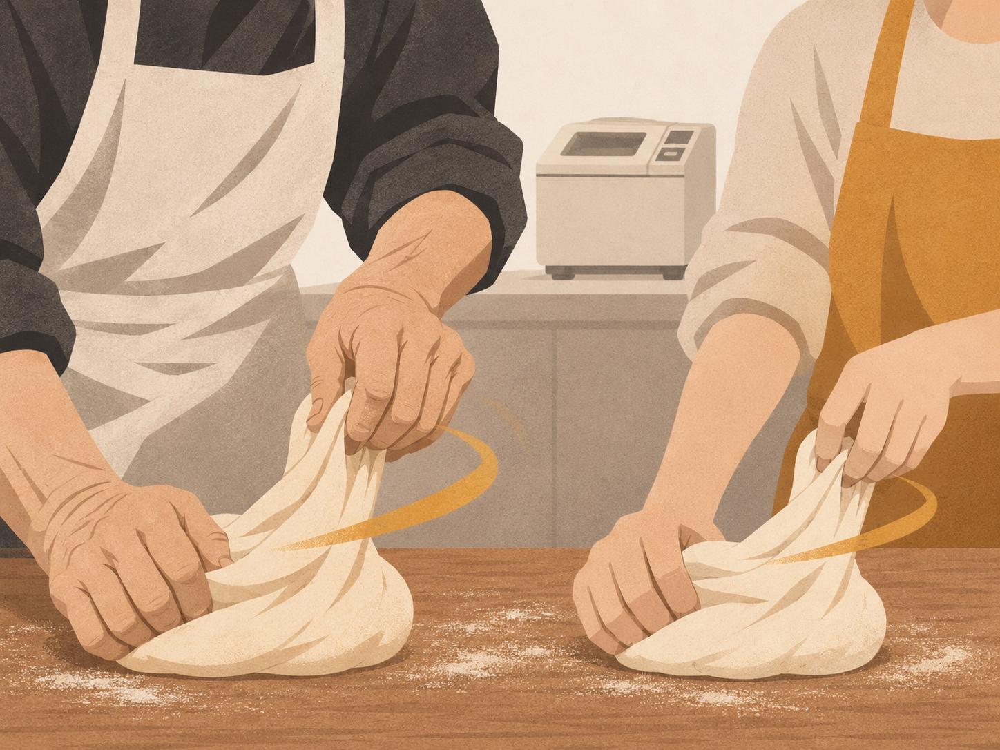
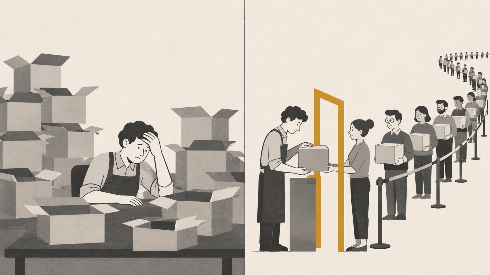

我们知道的，比我们能说出来的多。
"We can know more than we can tell."
——迈克尔·波兰尼（Michael Polanyi），《默会维度》（The Tacit Dimension）
团队里总有这样的人：同一件事，交给别人能做完，交给他能做好。他写出来的代码和内容、定下来的方案，往往一眼就比别人的对。我们把这样的人叫作超级个体，而这类人身上最稀缺的东西，常常被叫作 taste。
问题也随之而来：好东西只能从一个人手里出来，这个人的时间就成了整条生产线的瓶颈。于是管理者很自然会想：让超级个体带更多人，把能力 scale 出去，瓶颈不就解开了？
这个出发点没有错。但它默认了一件事：超级个体的产出可以拆开，交给别人照着做。而真正卡住产出的，往往不是手不够多，而是 taste 只有一份。动作可以复制，taste 很难。
一、Taste 写不进 SOP
Taste 是对「什么是好的」的判断：哪段代码将来会变成坑，哪个方案用户会买账，哪句文案读起来不对劲，哪个需求应该直接拒绝。
开头那句波兰尼的话，说的就是这件事。Taste 是一种说不全的知识：它来自大量实战里的比较、试错和复盘，做的人一眼就能看出好坏，却很难把判断过程完整写下来。
SOP 能写下来的是动作：先做什么、再做什么、检查哪几项。Taste 决定的是 SOP 没覆盖到的地方该怎么选，而真正决定结果好坏的，往往就是这些地方。
野中郁次郎记录过一个经典案例。上世纪 80 年代，松下开发家用面包机，做出来的面包始终不如面包师做的好吃。工程师们拿机器揉出来的面团和面包师揉出来的面团对比，连 X 光都用上了，还是没找到有用的线索。
后来，软件开发员田中郁子去大阪一家以面包闻名的酒店，跟着首席面包师学揉面。她花了很长时间，才发现面包师的手法里有一个独特的「拉伸加扭转」动作，这正是面包好吃的关键。把这个动作做进机器之后，面包机才真正成功：1987 年上市，第一年就卖出 53.6 万台，创下了纪录。
这个案例里，面包师的手艺是真实存在的，也确实决定了结果的好坏。但面包师自己说不清楚，工程师也分析不出来，最后是有人跟着他一起揉面、反复比较，才把它找了出来。超级个体的 taste 也是这样：它值钱，却很难直接写进 SOP。就算最后能写下一部分，也得先靠共同实践把它找出来。

二、验收也需要 Taste
很多管理者默认，别人做出来的东西，让超级个体把把关就行。问题是：判断好不好，本身就需要 taste。
如果「好」说不清楚，接手的人就只能按看得见的指标交差：完成了几单，按时没有，格式对不对。经济学里的多任务激励研究早就指出：只考核容易衡量的部分，注意力就会从难以衡量、但同样重要的部分移开（Holmström 与 Milgrom，1991）。这不是接手的人不努力，而是工作只能按写得下来的标准来分配和考核。
最后的结果往往是：真正能判断好坏的，还是那位超级个体。他从「做出好东西的人」，变成了「天天给别人挑毛病的人」。任务还是他拆，过程还是他推，结果还是他验，变的只是干活的人多了。瓶颈没有消失，只是从生产挪到了验收，而卡在验收上的，还是同一个人。

三、长期代价：Taste 会被稀释，人也会被耗尽
量上来以后，每一份交付都「差不多」，整体水准被拉到平均线。用户能感到品质在下降，指标上却很难看出来。等发现问题时，往往已经过去很久了。
更深的代价落在超级个体本人身上。Taste 不是一份存量，而是靠持续在一线做判断维持的。时间一旦被带教、验收和返工切碎，留给自己琢磨问题、积累判断的时间反而少了，taste 会慢慢变钝。最坏的情况是人被耗走了。原本想解决单点依赖，结果把单点推成了断点。
四、Taste 可以扩散，但不是靠 SOP
说 taste 难迁移，不是说它不能扩散。松下的故事其实已经给了答案：面包师的手艺不是被写成文档带出来的，而是有人跟着他做、一遍遍比较，才最终学到手。Taste 要扩散，得让别人站到判断的现场。
最直接的方式，是让接手的人参与真实的决策，而不是只拿到一份规范。超级个体做判断的时候，让别人在旁边看；别人做完的东西，由他来评，评的时候讲清楚为什么这个好、那个不好。一次次具体的对比和点评积累下来，判断的标准才会慢慢在另一个人身上长出来。
有一部分判断，也可以沉淀进工具。工程师 Lauren Tan（X 上的 @poteto）在演讲《All Code Is Slop (Except Mine)》中分享过一个做法：每纠正一次 AI 写的代码，就把能检查的问题写成 lint 规则；如果能通过 API 或架构设计让这类错误根本无法出现，就直接改设计。比如把逐帧运行的游戏代码标成 .hot.ts，再用 lint 禁止其中的内存分配，避免垃圾回收导致卡顿。这类问题原本要靠有经验的人在 review 时发现，现在交给工具反复检查。
这和「taste 写不进 SOP」并不矛盾。能写成规则的，是 taste 已经想清楚、可以检查的那部分；而发现下一个值得写成规则的问题，仍然要靠 taste。规则替人拦住已知的问题，人才能把时间留给新的问题。
但无论用哪种方式，都需要时间，也需要稳定的关系。丰田长期通过供应商协会、派专家到供应商现场支持，以及自主研学习小组，把自己的做法教给供应商（Dyer 与 Nobeoka，2000）。这类知识要靠长期合作才能积累，人员频繁更换，学到的东西就会跟着流失。
这也意味着，扩散 taste 本身就要占用超级个体大量的时间，见效往往很慢。如果一边要求带人，一边不减少直接交付的任务，也不把团队能力建设算进回报，超级个体就只能在两头之间被消耗，扩散这件事本身也会挤占瓶颈。
结语
把 taste scale 出去，听上去是在放大一个人的价值。可如果做法是让一个人拆解自己、复制自己、替所有人兜底，这个人就从创造价值的人，变成了一件被摊薄使用的工具。
康德在《道德形而上学奠基》里说，人永远不应仅仅被当作手段，而应同时被当作目的。Taste 长在一个具体的人身上：它是多年在一线做判断的积累，也是对把事情做好的那份在意。它不是一份可以随手调拨的产能。
问题从来不在于超级个体愿不愿意带人，而在于我们管理者有没有先看清：这件事能不能交出去，交出去要付出什么，代价由谁来承担。尊重 taste，首先是尊重这个人：给他时间、空间和回报，让他继续做只有自己能做好的事，也让愿意学的人有机会站到他身边。
Taste 能不能 scale，最终取决于我们怎么对待拥有 taste 的人。
引文和数据来源
1. 开篇：波兰尼与默会知识
Michael Polanyi, The Tacit Dimension. Garden City, NY: Doubleday, 1966，第 1 章「Tacit Knowing」，第 4 页。原文节选；芝加哥大学出版社再版书页。
说明：英文摘引为原书较长句子的一部分。中文为本文译述；以这句话解释 taste，是本文对默会知识概念的运用，并非波兰尼直接讨论了本文意义上的 taste。
2. 第一节：松下面包机
Ikujiro Nonaka, 「The Knowledge-Creating Company,」 Harvard Business Review, 69(6), November–December 1991, pp. 96–104。文章书目信息。
详细版本：Ikujiro Nonaka & Hirotaka Takeuchi, The Knowledge-Creating Company: How Japanese Companies Create the Dynamics of Innovation. Oxford University Press, 1995，第 63 页及第 4 章第 103–108 页。原书扫描本。以下细节以 1995 年原书为准。
说明：酒店为 Osaka International Hotel（大阪国际酒店）；Ikuko Tanaka 被称为软件开发人员，第 63 页称其为软件开发负责人。原书写的是对两种面团做 X 光比较后，未获得有意义的线索。「拉伸加扭转」对应 twisting stretch。第 108 页记载 1987 年 2 月上市、首年销售 536,000 台，并称其创纪录。松下官方产品目录也列首款面包机为 1987 年。
说明：书中还描述了经验后来被提炼为机械规格和手册。这个案例支持「共同实践帮助提炼原本难以表达的知识」，不能据此断言经验永远无法形成规范。
3. 第二节：多任务激励
Bengt Holmström & Paul Milgrom, 「Multitask Principal-Agent Analyses: Incentive Contracts, Asset Ownership, and Job Design,」 Journal of Law, Economics, & Organization, 7, Special Issue, 1991, pp. 24–52。作者提供的论文。
说明：论文指出，当任务具有多个维度、部分维度难以测量，且不同任务会争夺努力或注意力时，对易测量维度施加强激励可能损害其他维度。正文是这一机制的应用；不宜将其写成所有指标考核都必然产生同样结果。
4. 第四节：@poteto 把经验变成自动检查
Lauren Tan（@poteto）, 「All Code Is Slop (Except Mine),」 AI Engineer CODE 2026，2026 年 11 月 11 日演讲。主办方整理页；演讲录像，约 5:00–9:40 讨论架构约束、lint 与重复纠错。
她于 11 月 14 日在 X 上分享演讲。游戏开发原帖列出 .hot.ts 与禁止内存分配的做法；原帖时间为 11 月 1 日 23:57 UTC，即新加坡时间 11 月 2 日。她的公开仓库也明确主张把重复纠正落实到可执行机制中。
说明：标题带有幽默意味，不表示她证明了「只有自己的代码可以」。案例支持将可检查的经验落实为约束，不能据此宣称全部 taste 都能自动化；也不把个人实践当作普遍有效的因果实验。
5. 第四节：丰田知识共享网络
Jeffrey H. Dyer & Kentaro Nobeoka, 「Creating and Managing a High-Performance Knowledge-Sharing Network: The Toyota Case,」 Strategic Management Journal, 21(3), 2000, pp. 345–367。作者上传的论文全文。
说明：正文三种机制分别对应供应商协会、运营管理咨询部（OMCD）的现场支持，以及自主研（jishuken）学习小组。现场支持的时长因项目而异。论文另列跨企业人员流动，因此这三项并非完整清单。
协会始于 1943 年，OMCD 始于 1960 年代中期，供应商自主研小组始于 1977 年，说明机制逐步形成。论文也记载，当时美国 TSSC 咨询项目无一短于 8 个月，多数至少 18 个月；这只是特定项目的观察，不能推成所有 taste 扩散的周期。
6. 结语：人同时是目的
Immanuel Kant, Grundlegung zur Metaphysik der Sitten（《道德形而上学奠基》），1785，第 2 节，学院版页码 Ak. 4:429。英译本。
说明：正文是对「人性公式」的意译。重点是「绝不仅仅作为手段，并同时作为目的」，并非禁止一切合作、分工或工具性关系。
延伸阅读
- 加人未必提速。 Frederick P. Brooks Jr., The Mythical Man-Month: Essays on Software Engineering, Addison-Wesley, 1975，第 2 章；1995 年周年版第 25 页。原书周年版。布鲁克斯定律讨论已延期的软件项目及培训、沟通等负担，不宜泛化为一切项目加人都会更慢。
- 瓶颈可能从生产转向验收。 Eliyahu M. Goldratt & Jeff Cox, The Goal, North River Press, 1984（后续修订版副标题为 A Process of Ongoing Improvement）。出版社版本说明；Goldratt 本人对约束的说明。当验收已是约束时，只提高上游产量可能增加排队，未必增加最终交付。约束也可能来自需求、规则或其他环节。
- 通过共同实践学习判断。 Jean Lave & Etienne Wenger, Situated Learning: Legitimate Peripheral Participation, Cambridge University Press, 1991。出版社书页。新手通过参与实践共同体，逐步走向更完整的参与。它提供学习框架，不是对所有 taste 迁移效果的直接实验验证。